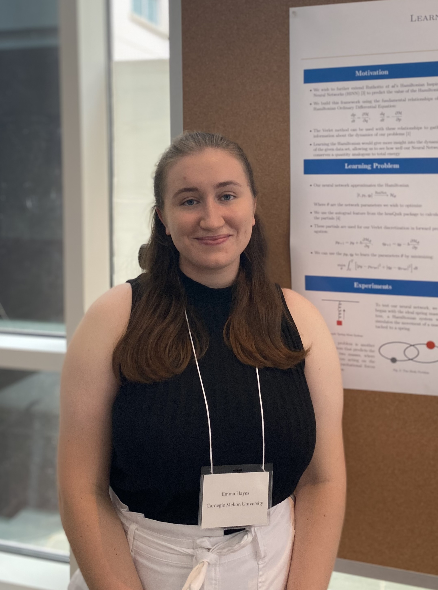

About

My name is Emma Hayes. I am a current Mathematics PhD student at the University of Wisconsin-Madison, and a member of the Rycroft Group. I completed my undergraduate studies at Carnegie Mellon University. My mathematical interests lie in computational math in general but specifically modeling differentional equations. I love being able to explore the relationships between math and computer science and work with real life problems and examples. Currently I am working with a reaction-diffusion equation to model insect wings.
Outside of math I like to bake, hike, make art, and build lego. I have dabbled in painting and crochet, but my main art form now is embroidery!
Contact:
- ehayes7@wisc.edu